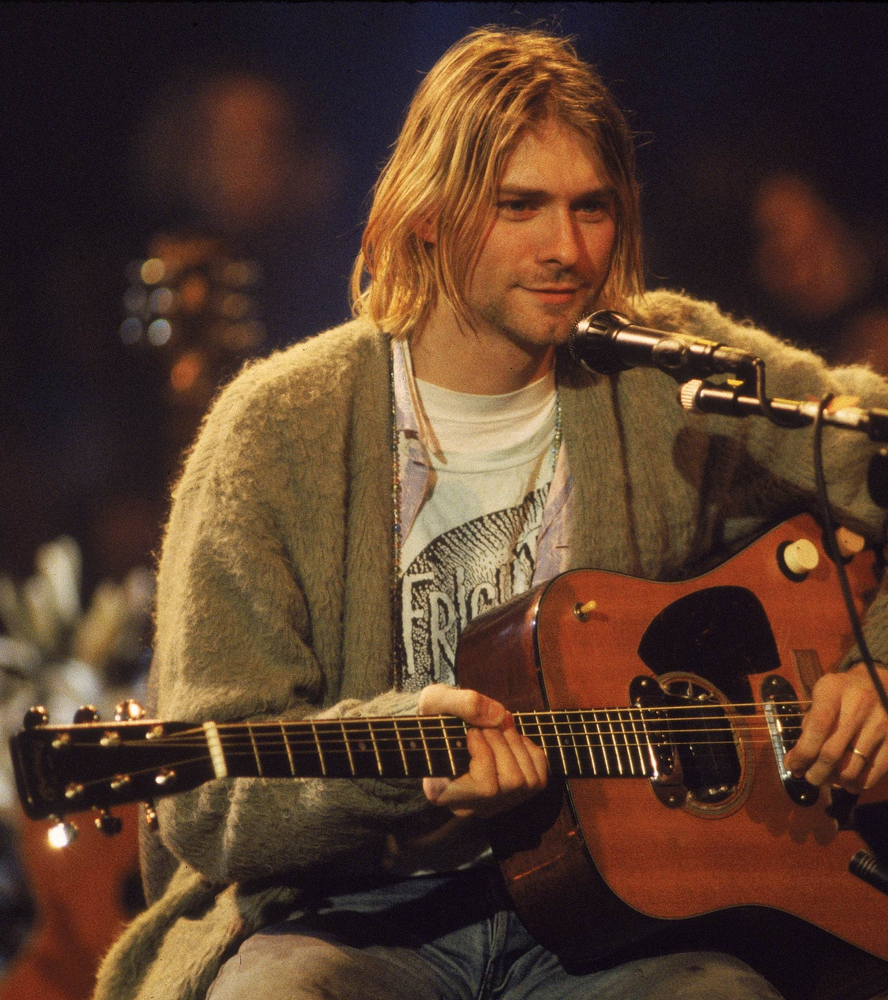

|  |
Курт Кобейн Курт Дональд Кобейн - 20 лютого 1967 р. --- 5 квітня 1994 р. Американський музикант, композитор і художник,
фронтмен групи Nirvana . Курт народився 20 лютого 1967 року в місті Абердині штату Вашингтон.
Майбутній музикант зростав в музичній сім'ї: його дядко, Чак Франденбург , виступав із групою The Beachcombers , тітка
Мері Ерл грала на гітарі. Цікавість до музики по словам родичів проявився з двох років. В 1985 році Курт організував
групу під назвою Fecal Matter , в складі якої був Дейл Кровер , Грег Хокансон і сам Кобейн. Приблизно через рік група
розпалась, так і не випустивши ні одного диска, після цього Курт почав поширювати демо-запис гурту серед знайомих,
він хотів створити нову групу. Одна з касет дісталась Крісту Новоселичу - так була створена нова команда, в якій незабаром
з'явився третій учасник - ударник Чед Ченнінг . Група змінила кілька назв: "Skid Row", "Ted Ed Fred", "Bliss", "Pen Cap Chew",
проте в підсумку отримала назву "Nirvana" . В 1988 році вийшов перший синг групи |
| Курт на MTV Unplugged in New York 1993 р. |
|---|
Це одна з перших гітар, придбаних Куртом. Univox Курти - це модель Hi-Flyr, яка, очевидно, випускалася десь між 1974 і 1977 роками. Курт грав на цій гітарі, імовірно, з середини 80-х до 1988 року на всіх ранніх концертах Nirvana в 1987 році. Він пофарбував подушечку в рожевий колір, а на тіло поклав пучок наклейок.
Важливо відзначити, що на початку 1988 року з'явився і інший градієнт Univox Hi-Flyr. Будучи ідентичною за характеристиками, ця гітара не мала наклейок, а колодка не була рожевою – тому виглядає так, ніби це інша гітара. Ближче до кінця 1988 року ця гітара також була прикрашена деякими наклейками, а шийний пікап був знятий – ймовірно, для установки в Greco Mustang
Це був перший Fender Mustang Курта. Він використовував її лише на декількох концертах в 1989 році, під час яких пару раз зіпсував гітару – і в підсумку розбив її в липні 1989 року без можливості відновлення в клубі Максвелла в Нью-Джерсі.
Ця гітара з'явилася приблизно в той час, коли група почала запис альбому Nevermind влітку 1991 року. З роками інструмент став однією зі знакових гітар Курта.
Ця гітара найбільш відома своєю появою на Фестивалі читання в 1992 році. Курт більшу частину концерту грав на цій гітарі, а в кінці вийшов до глядачів і віддав її першій особі з глядачів.
Перший раз ця гітара згадується в кінці 1992 року, коли Курт приєднався до групи Mudhoney на сцені, щоб виконати кілька пісень. Зрідка Курт грав на ньому все життя, хоча він більше схожий на домашній інструмент, ніж на той, який він взяв би на гастролі. Десь у 1993 році Курт додав наклейку з президентської кампанії Річарда Ніксона 70-х років із написом «Nixon Now»
Звичайно, ця гітара є найвідомішою акустикою Курта, так як вона використовувалася на концерті Nirvana MTV Unplugged. Курт купив цього Мартіна в кінці 1993 року, за кілька місяців до концерту Unplugged. Насправді це досить рідкісна гітара, вироблена лише протягом одного року в кінці 50-х років, і це був один з найперших Мартінів з електричними пікапами. Заводські пікапи звучали не дуже добре на обмотаних бронзою струнах, якими користувався Курт, тому гітара оснащувалася ще одним пікапом - Bartolini 3AV.